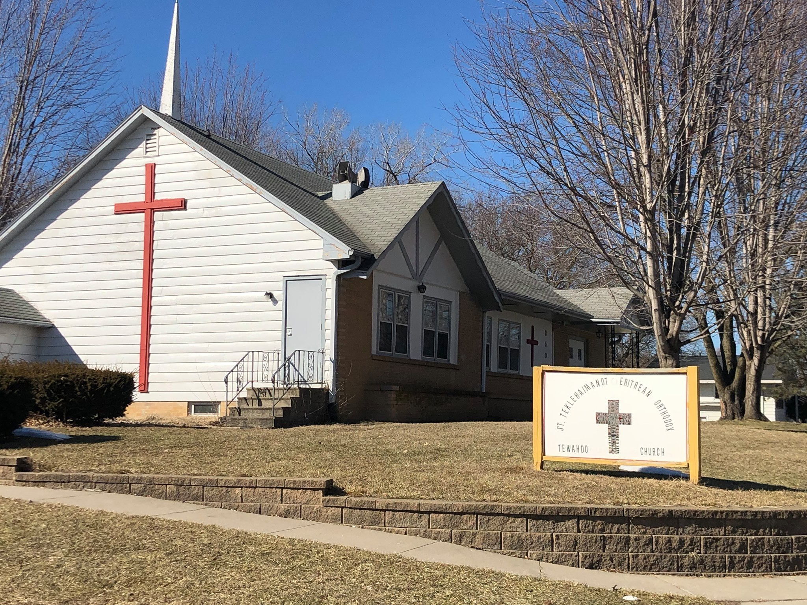

Saint Teklehaimanot Eritrean Orthodox Tewahdo Church
Welcome to our Des Moines-area church community. Learn about our Orthodox faith, worship schedule, feasts, and community life.
Welcome to our community
We are happy to have you with us. Through this website, we are pleased to acquaint you with our community's vibrant life and rich history.
What is the Orthodox Church?
The Orthodox Church is the original Christian Church, the church founded by Christ and described in the pages of the New Testament. Her history can be traced in unbroken continuity all the way back to Christ and the Twelve Apostles.
Our St. Teklehaimanot community welcomes Orthodox Christians of all ethnic and cultural backgrounds as well as newcomers who seek to know more about our Orthodox Faith.

Our Mission Statement
To grow in union with God as a family on the path of salvation, embracing and sharing our Orthodox Christian Faith.
Support the Church
Thank you for supporting our parish and community. For current donation methods, please contact the church at steklehaimanot.eotc@gmail.com or call (515) 771-2027 .